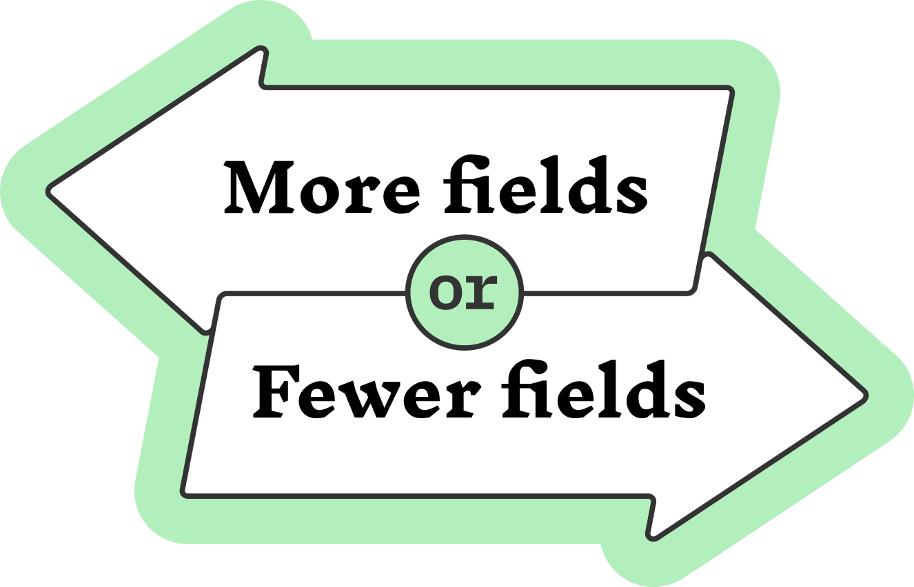
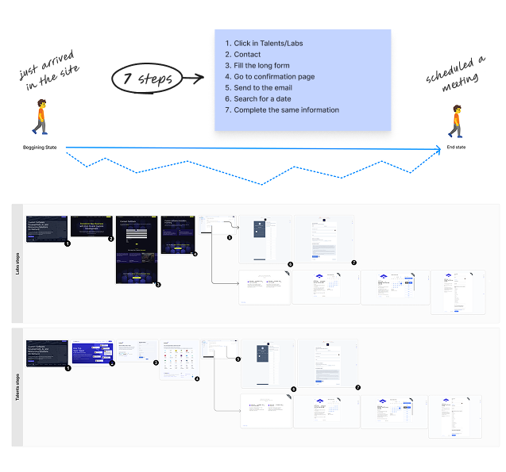
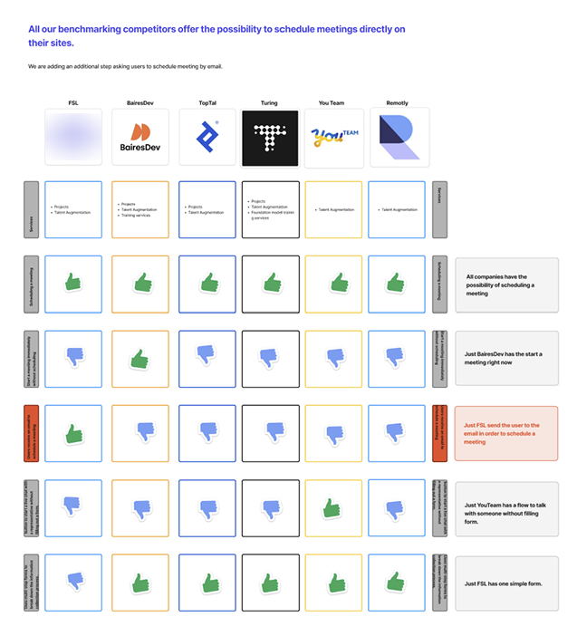
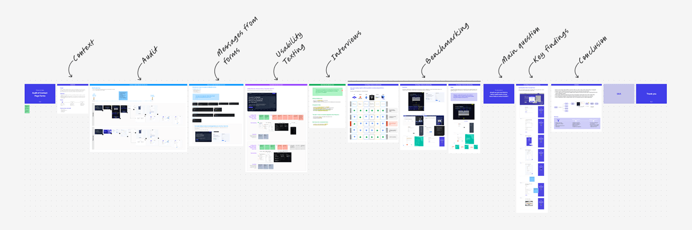
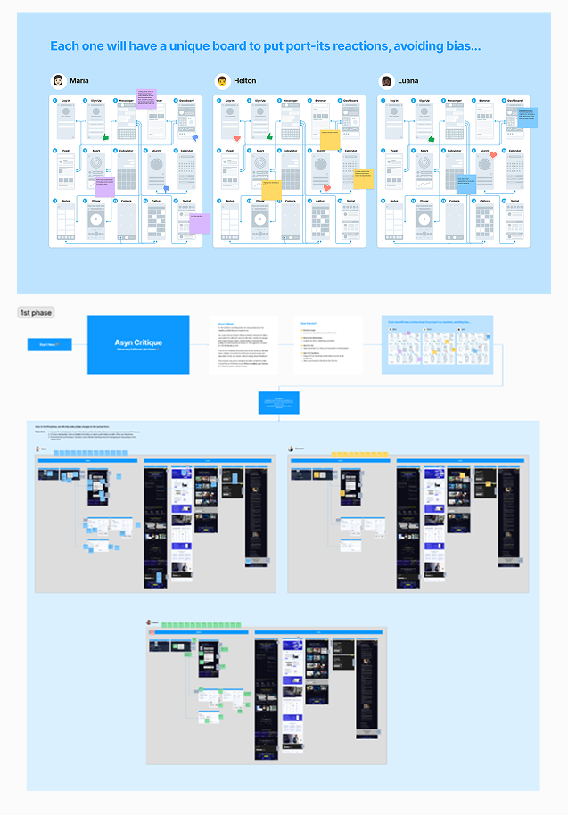
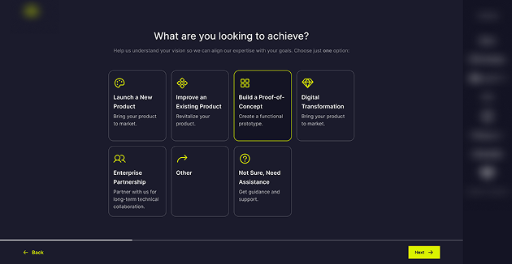
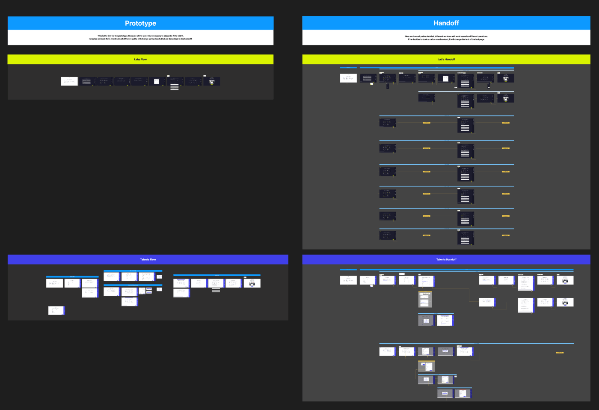
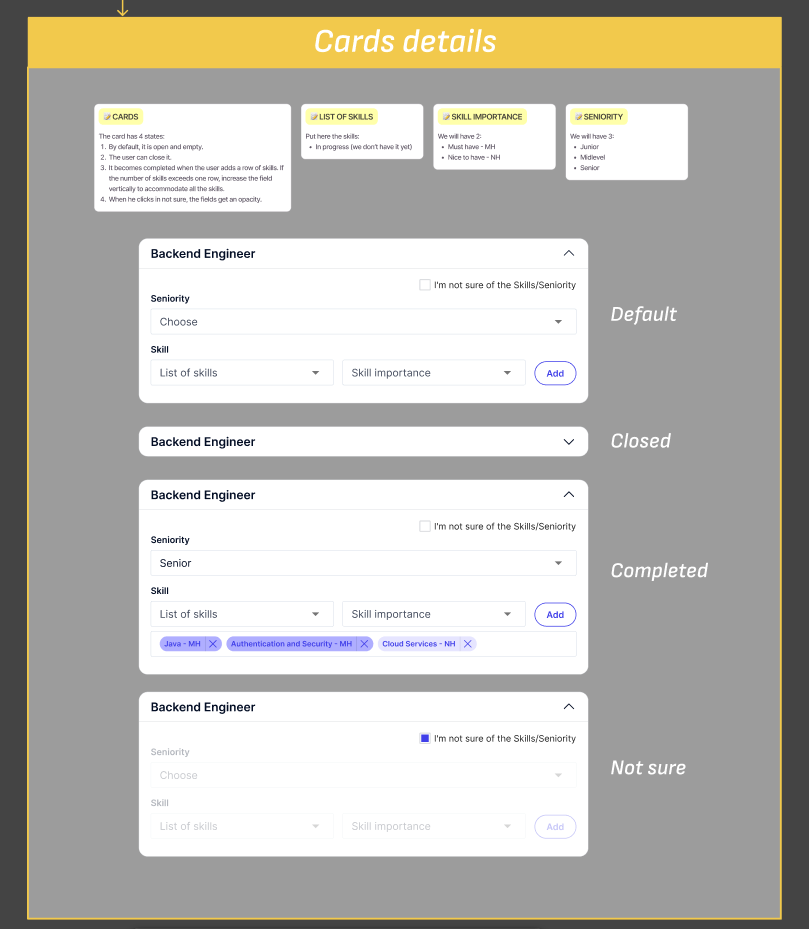
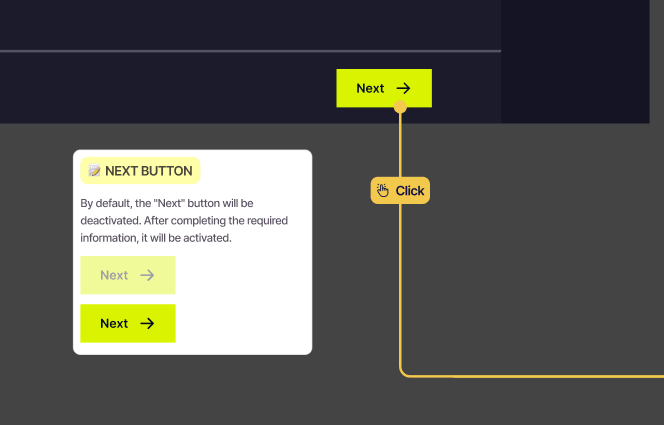
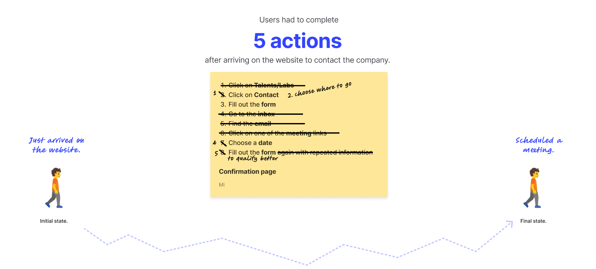

Redesigning a contact flow to reduce friction and increase qualified leads.
| Company | US-based software consultancy offering two services: Team Allocation (designers and developers embedded into client teams) and Project Delivery (scoped solutions delivered with the client's PM). |
| Project | Redesign the website contact flow to reduce irrelevant submissions and increase the number of qualified leads reaching the sales team. |
| Role | Senior Product Designer — led all research, wireframing, prototyping, and documentation. Supported by the sales and marketing teams throughout. |
| Goals | Increase qualified leads · Reduce irrelevant submissions · Clarify navigation labels · Improve data quality for the sales team |
| Process | Self-audit · Behavior data · Interviews · Usability testing · Benchmarking · Wireframes · Async critique · Prototype · Round 2 usability testing · Handoff + Confluence docs |
| Outcomes | +22% form completions · −71% irrelevant submissions · Smoother internal process reported by stakeholders |
Note: The company name has been omitted at the request of my former lead. This work has been approved for publication.
The company had two ways to bring in new clients: the sales team reaching out on LinkedIn, and potential clients finding them through the website. The website contact forms were underperforming — receiving too many irrelevant submissions from people applying for jobs, promoting their own services, or making general inquiries.
That noise made it harder to find real business opportunities. The goal was clear: increase the number of qualified leads.
I started by acting as a potential client and going through the entire flow myself. The website had three navigation items: Talent / Labs / Contact. Two questions came up immediately: What is Talent? What is Labs?
Talent was the team allocation service. Labs was project delivery. The labels made sense internally — but meant nothing to people outside the company.

Behavior data confirmed it. Talent had significantly more traffic than Labs — which was strange, since demand for Labs projects was actually higher. My hypothesis: the general contact flow was directing people to the Talent page before identifying their intent, inflating that page's numbers.
Usability tests with 8 participants reinforced what the data was suggesting:
6 of 8 interpreted "Talent" as a job board, not an allocation service.
5 of 8 interpreted "Labs" as a testing space or internal resource hub, not a project launch service.
"So we get a lot of spam too in these — where it's just someone promoting their services to us."
The interviews also surfaced a conflict: Marketing wanted fewer fields to reduce friction. Sales wanted more fields to better qualify leads. Both were right — and that tension shaped the solution.
Phase 1 — Quick wins: Renamed "Talent" and "Labs" with clear descriptions so people understood what they were clicking on. Removed redundant fields. Added a generic inquiry form to capture everything that wasn't a qualified lead — keeping the main forms clean.
Phase 2 — The smarter flow: The form was redesigned as a multi-step experience. The first steps captured only what was needed to schedule a call. Once the meeting was locked in, the form asked for more detail to help qualify the lead.
This solved the marketing vs. sales conflict: reduced friction early, better qualification later. And if someone dropped off before finishing — the most important thing, the meeting, was already scheduled. A progress indicator kept people oriented throughout, and every step had a clear description so people knew exactly what was being asked and why.

Audit Summary of Existing Forms and Process

Key Findings in Competitive Benchmarking

Figjam Documentation
Before testing the prototype, I ran an async silent critique with the team. Specialists from different areas reviewed the wireframes independently — giving everyone equal space to share feedback without bias or scheduling conflicts.
Each person annotated their own copy of the Figma screens, without seeing anyone else's comments first. Patterns across reviewers carried real weight. Outliers became conversation starters, not vetoes.
Why I always do this: In group reviews, early opinions anchor the rest. Async critique removes that dynamic — and they always catch something I missed. That's exactly the point.

Asynchronous critique setup — each stakeholder reviewed an independent copy to avoid anchoring bias
After incorporating critique feedback, I ran a second round of usability tests on the prototype. This gave additional evidence to support renaming "Talent" and "Labs," and validated the new multi-step flow.
Handoff included a clickable prototype and detailed documentation: field descriptions, clickable interactions, and developer notes. Everything was also documented in Confluence to make sure nothing got lost in translation.

Final prototype screens — the complete guided flow ready for usability testing

Handoff documentation — field specs, states, and conditional logic for the dev team


Every detail accessible to the developer — states, conditional logic, and specs per component
These results were shared by my former lead while I was already allocated to another project — about two months after launch.
Clearer labels, a smarter flow, and a dedicated path for non-qualified inquiries made the difference on both sides of the form.

Before → After: the shift from a single long form to a structured, guided experience
Vague labels are a silent conversion killer. "Talent" and "Labs" made perfect sense internally — but meant nothing to people outside the company. Clarity at the entry point changes everything downstream.
The "essential first" approach works. Asking only for what's needed to take the next step — then going deeper — respects the person's time while still giving the business what it needs. It also protects the most important outcome even if someone drops off early.
Collaboration makes design better. Every critique session and every interview surfaced something I hadn't seen on my own. Having support from sales and marketing throughout helped me make better decisions at every phase.